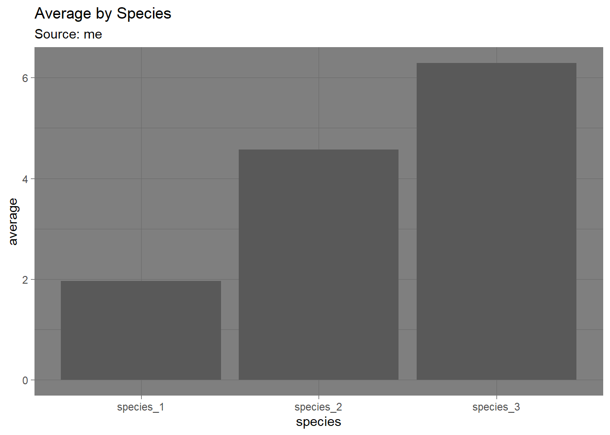
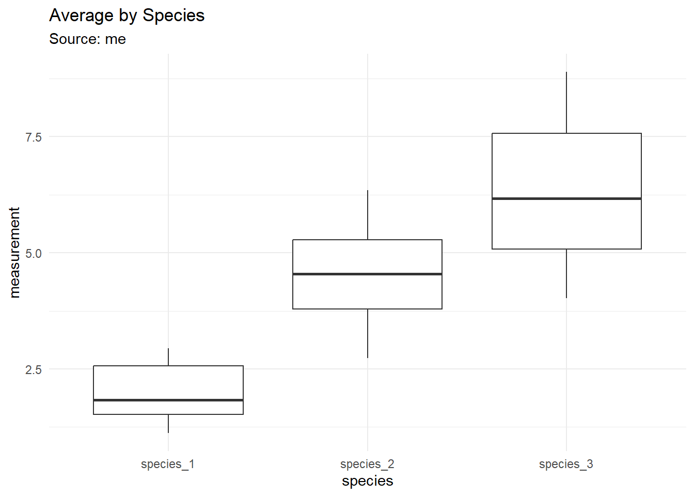
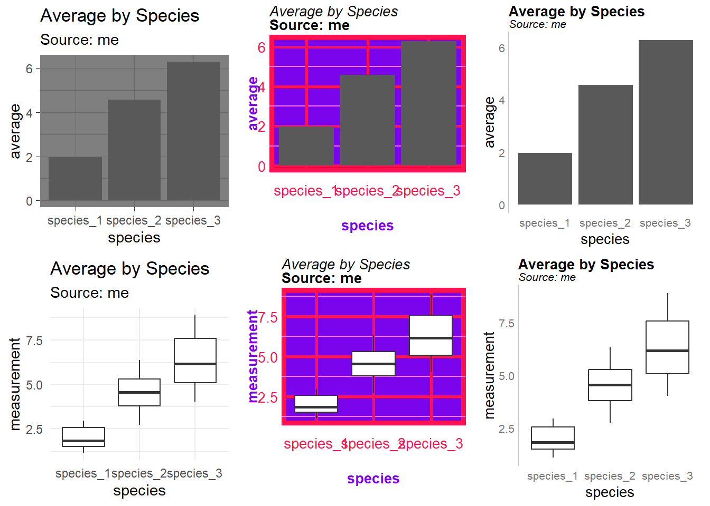

CODE
library(tibble)
library(tidyr)
library(dplyr)
library(ggplot2)
library(gridExtra)This video assumes you have installed and used R and RStudio. I’m using a Quarto document for instruction, but this will work in a standard R script.
I’m going to show you how to define your own custom themes for the ggplot2 data visualization library. This is very useful when you want to create multiple plots that all have the same overall look and feel.
The following libraries provide extended functionality:
library(tibble)
library(tidyr)
library(dplyr)
library(ggplot2)
library(gridExtra)For this tutorial, I’ll create some very simple data.
#simple data
#create a vector of id numbers
site<-c(sprintf("site_%0.2d",seq(1:50)))
#create 3 vectors of 50 numeric values each
#values are sampled from the normal distribution
species_1<-c(runif(n=50, min=1.0, max=3.0))
species_2<-c(runif(n=50, min=2.5, max=6.5))
species_3<-c(runif(n=50, min=4.0, max=9.0))
#create a dataframe to organize the data vectors
t<-tibble(site, species_1, species_2, species_3)
#display the dataframe
t# A tibble: 50 × 4
site species_1 species_2 species_3
<chr> <dbl> <dbl> <dbl>
1 site_01 1.14 6.07 6.06
2 site_02 2.75 5.15 7.59
3 site_03 2.67 4.66 6.56
4 site_04 1.13 3.79 7.07
5 site_05 1.33 4.63 6.40
6 site_06 2.81 6.04 7.62
7 site_07 1.65 6.25 8.56
8 site_08 1.25 5.02 4.89
9 site_09 1.61 4.21 6.93
10 site_10 2.95 6.35 5.08
# ℹ 40 more rowsBefore passing data to ggplot2 for visualization, I’ll first pivot the data to make it “tidy”:
Be sure to compare this tibble versus the previous one until the change makes sense. Notice that this tidy tibble has many more rows.
#tidyr is useful for data manipulation and format standardization
library(tidyr)
#pivot the "wide" data to a "longer" format
#the column names will now be data points
t_tidy<- t %>% pivot_longer(!site, names_to = "species", values_to = "measurement")
#display the tidy tibble
t_tidy# A tibble: 150 × 3
site species measurement
<chr> <chr> <dbl>
1 site_01 species_1 1.14
2 site_01 species_2 6.07
3 site_01 species_3 6.06
4 site_02 species_1 2.75
5 site_02 species_2 5.15
6 site_02 species_3 7.59
7 site_03 species_1 2.67
8 site_03 species_2 4.66
9 site_03 species_3 6.56
10 site_04 species_1 1.13
# ℹ 140 more rowsNow the data are in a better format for further manipulation and visualization.
I’ll now use our tidy data to generate two plots using a pre-made theme included with ggplot. Themes provide an easy way to apply several style choices at once and they serve as a useful stepping stone to customization.
Let’s say we want to plot a bar chart of the mean of the measurement by species. First, I’ll summarize the values using dplyr.
#create a summary tibble containing the measurement averages by species
#dplyr has some SQL-like functions
t_means<-t_tidy %>%
group_by(species) %>%
summarise_at(vars(measurement), list(average = mean))Now the data are ready to visualize with ggplot using the well-formatted summary data.
#create the barchart
plot_barchart<-ggplot(data=t_means, aes(x=species, y=average)) +
geom_bar(stat="identity")+
labs(title="Average by Species", subtitle="Source: me")+
theme_dark()
#display the barchart
plot_barchart
Let’s say we want to generate boxplots of the species measurements.
#create the boxplots
plot_boxplots<-ggplot(data=t_tidy, aes(x=species, y=measurement)) +
geom_boxplot()+
labs(title="Average by Species", subtitle="Source: me")+
theme_minimal()
#display the boxplots
plot_boxplots
Now I’ll create a custom theme that has some ugly design choices built in. I’ll also make a good version. These custom themes will be applied to the plots.
#bad theme
theme_bad <- function(){
#fonts
#defaults on Windows: serif, sans, or mono
font_1 <- "mono"
font_2 <- "sans"
#color palette
col_1 <- "#120458"
col_2 <- "#7A04EB"
col_3 <- "#FE75FE"
col_4 <- "#FF00A0"
col_5 <- "#FF124F"
#the base theme being adjusted
#AKA the starting point
theme_minimal() %+replace%
theme(
#background color
panel.background = element_rect(fill=col_2,color=col_5,linewidth=3,linetype="solid"),
#background grid lines
panel.grid.major = element_line(color=col_5,linewidth = 1,linetype="solid"),
panel.grid.minor = element_line(color=col_3,linewidth = 0.5,linetype="solid"),
#axis text adjustments
axis.text.x = element_text(family="", face="plain", color=col_5, size=10, angle=0, margin=margin(5, b = 10)),
axis.text.y = element_text(family="", face="plain", color=col_5, size=10, angle=0, margin=margin(5, b = 10)),
axis.title.x = element_text(family="", face="bold", color=col_2, size=10, angle=0, margin=margin(5, b = 10)),
axis.title.y = element_text(family="", face="bold", color=col_2, size=10, angle=90, margin=margin(5, b = 10)),
#title and caption text adjustments
plot.title = element_text(family = font_2,size = 10,face = 'italic',hjust = 0,vjust = 2),
plot.subtitle = element_text(family = font_2,size = 10,face = 'bold',hjust = 0,vjust = 2),
plot.caption = element_text(family = font_2,size = 10,face = 'bold',hjust = 0,vjust = 2)
)
}
#good theme
theme_good <- function(){
#fonts
#defaults on Windows: serif, sans, or mono
font_1 <- "mono"
font_2 <- "sans"
#color palette
col_1 <- "#FFFFFF"
col_2 <- "#000000"
col_3 <- "#cccccc"
col_4 <- "#777777"
col_5 <- "#029af2"
#the base theme being adjusted
#AKA the starting point
theme_minimal() %+replace%
theme(
#background color
panel.background = element_blank(),
#background grid lines
panel.grid.major = element_blank(),
panel.grid.minor = element_blank(),
#axis text adjustments
axis.text.x = element_text(family="", face="plain", color=col_4, size=8, angle=0),
axis.text.y = element_text(family="", face="plain", color=col_4, size=8, angle=0),
axis.title.x = element_text(family="", face="plain", color=col_2, size=10,angle=0,margin=margin(t = 3)),
axis.title.y = element_text(family="", face="plain", color=col_2, size=10,angle=90,margin=margin(r = 3)),
#title and caption text adjustments
plot.title = element_text(family = font_2,size = 10,face = 'bold',hjust = 0,vjust = 2),
plot.subtitle = element_text(family = font_2,size = 8,face = 'italic',hjust = 0,vjust = 2),
plot.caption = element_text(family = font_2,size = 6, face = 'plain',hjust = 0,vjust = 2),
#axis lines
axis.line.y.left = element_line(linetype = "solid",color = col_3,linewidth = 0.5)
)
}For this demonstration, I’m using the gridExtra library which allows plots to be arranged with a bit more sophistication.Not all plot elements are used (e.g. plot title).
p1a<-plot_barchart
p1b<-plot_barchart + theme_bad()
p1c<-plot_barchart + theme_good()
p2a<-plot_boxplots
p2b<-plot_boxplots + theme_bad()
p2c<-plot_boxplots + theme_good()
grid.arrange(p1a,p1b,p1c,p2a,p2b,p2c,ncol=3)